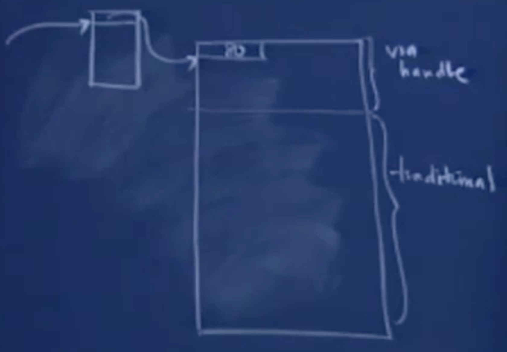
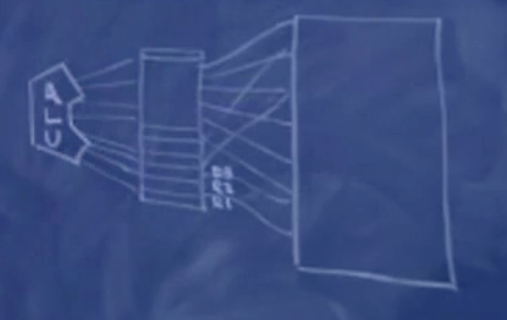

# 斯坦福编程范式 CS107_8
# 关于内存
当我们执行下述命令时：
int *arr = malloc(40*sizeof(int)); |
我们都为以为返回的是 160 字节的内存，但实际上要比 160 多。在堆上，这段内存块开始的时候，会有一部分内存被用来记录这个内存块的大小。
当我们执行如下命令时：
int *arr = malloc(100*sizeof(int)); | |
// 当你觉得 100 个 int 类型的有点多，60 个就足够了，你尝试执行下面的代码 | |
free(arr+60); |
以上是动态的申请空间。当执行 free 的时候，函数不会进行任何的完整性检查，malloc、free、reaclloc 都假设你是 C 或 C++ 语言编程高手。free 会机械的回退 4 或 8 字节，并将其中的内容理解为这一段要释放的内存的大小，并将这段长度的内存归还给堆。所以这样进行释放内存是不正确的。
假设你以下述方式申请内存：
int array[100]; | |
free(array); |
这是静态申请了数组空间，这种申请方式与堆内存无关，如果我们调用 free 函数，就会机械的向前回退 4 或 8 字节内存，并将其中的内容认为是要释放的内存的大小，并将这段长度的内存归还给堆。这样也不对，因为原先的内存不在堆中。
# 内存的分配
内存分配时有些实例会将堆进行分块，当一个内存申请小于 2 的 3 次方、5 次方、7 次方等，会被直接从堆的小、中、大块内存中进行分配，函数不会堆每次的内存分配精确的空间，而是通过规范大小的子内存段进行分配，这样可以更加快速的管理内存，并且内存段简洁且有组织。
# 堆中内存可用与不可用表示
当使用 malloc 或 realloc 时，函数希望能够快速的扫描堆中未使用的块。函数使用一个内存块的链表来记录可分配的区域，每次调用 malloc、realloc 内存管理器都会遍历这个链表，并找到某个足够大的内存块来满足请求。
当使用 free 函数时，内存被释放并归还给堆时，这段内存块中的内容没有任何改变，没有清 0，只是其前四个字节指向下一段空闲内存开始地址，上一段空闲内存的指针指向这段内存的开始地址，现在系统认为这段内存就是空闲的。当然这样会导致内存中是分散的空闲内存，而没有整大段的空闲内存，有些实现会将空闲零碎的内存进行合并。
假设一个堆有 200 字节，其中使用了 40 字节，还有 160 字节的空闲，但都是零碎的：

如果用户动态申请 100 字节的空间，则无法提供，因为剩下的 160 字节内存都是零碎的。假如我们对堆内存进行整理，把已经占用的 40 字节都挪到一起，那么剩下的 160 字节就是一个整体了。但是这样做会出现一个问题：原先被占用的内存块的开始地址已经被分配给用户了，如果进行移动，则内存块的开始地址会变化，这和原先用户所获得的地址不一致。
# 堆内存的句柄管理
除去经典管理的部分，堆中的相当一部分的内存是通过句柄的方式进行管理的，其不再返回一个直接指向内存的地址，而是一个二级指针，即用户得到的是一个地址列表的某一个地址，地址列表中的地址指向句柄管理的内存。这个地址列表和堆内存都由管理器进行管理，这样在进行琐碎内存合并的时候，就可以进行重定向地址。当然这样也存在问题，在移动的内存的时候不可能对内存进行访问。

所以在对某块内存进行使用时，就需要对系统发出 “不需要对这块内存进行压缩” 的命令，并在使用完这段内存的时候，再发出 “可以对这段内存进行压缩” 的命令。比较类似于并发。
# 栈段
栈的使用和函数的深度成比例。以下列函数为例
void A(){ | |
int a; | |
short b[4]; | |
double c; | |
B(); | |
C(); | |
} | |
void B(){ | |
int x; | |
char *y; | |
char *z[2]; | |
C(); | |
} | |
void C(){ | |
double m[3]; | |
int n; | |
} |
上述函数在被调用时都会对变量进行申请空间，A 申请的空间用六边形进行表示，B 申请的空间用三角形进行表示，C 申请的空间用圆进行表示。调用 A 的时候，栈会减去一个六边形空间用以存储 A 中的局部变量；随后 A 调用 B，栈会减去一个三角形空间大小用以存储 B 中的局部变量，B 只能访问这个三角形内存空间中的内容，而不知道它上方的内存都是些什么；随后 B 调用 C，因此栈会减去一个圆的空间大小以存储 C 中的局部变量。当 C 调用完毕后，栈指针会上升回到调用 C 之前的位置，C 内存空间的内容就是那个圆不会被清空，但是也已经无法被访问了；然后 B 调用完毕，指针回到 B 调用之前的位置。最后 A 调用 C，再指针向下移动一个圆的内存空间大小，覆盖了原先三角形的空间。
# 汇编代码和如何操作栈
使用 C 或者 C++ 模拟汇编语言的思路。
在计算机中存在寄存器，寄存器和内存 RAM 相连，也和 ALU 逻辑运算器相连。寄存器通常是 4 字节大的，并且可以非常快速的进行访问。 对任何变量进行加减乘除等运算时，都会将变量读取到寄存器中进行算数运算，不论变量是在栈中还是堆中，然后将结果写入其他寄存器中，然后将存储在寄存器中的内容写到属于它的内存中 。

如果将 ALU 直接和 RAM 进行相连，就会使时间大大增加。